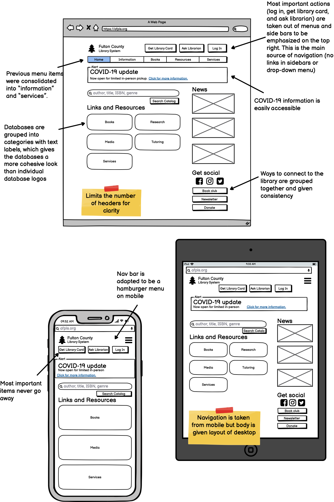

Responsive Redesign
Objective
Analyze one page of a website based on usability and accessibility. Then, draft and build and improved version.
The Website
Fulton County Library System is the central hub for 34 libraries in Fulton County and Atlanta, Georgia.

Analysis
Usability Problems
- Too many pictures
- Color palette isn't coordinated
- Lack of contrast (both the white and black text on light green background are hard to read
- Headers don’t stand out against pictures (databases, etc.)
- Column sizes are inconsistent
- Use of pictures of text instead of text (left column)
- For example locations, event calendar, services, and about are all navigation bar menu options, news is a box on the homepage
- Within "books and materials", my account and catalog search are grouped together
- Coronavirus updates are at the bottom
- Account info is in a menu item and not at the top as expected
- Search is in the middle of the page, should be at the top
- Navigation is not cohesive (sidebars, nav bars, etc)
- Use of drop down menu on top right instead of intuitive design
Accessibility Concerns
Low-Fi Mockup
Layouts consolidate navigation from the original website, focusing on the navigation bar at the top and removing the drop down menus and sidebars. This makes the website more usable because all actions are accessible from the nav bar, so the user knows where to look. Additionally, other items of interest are given more emphasis on the home page (for example, databse links, news, and search).
Visual Style Guide
Color palette was taken from the Fulton County logo (blue and orange), yet the orange was shifted toward yellow to be more timeless. Typography was chosen to be cohesive to be lively and visually interesting yet confident and sleek.